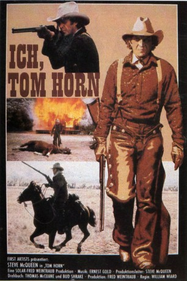
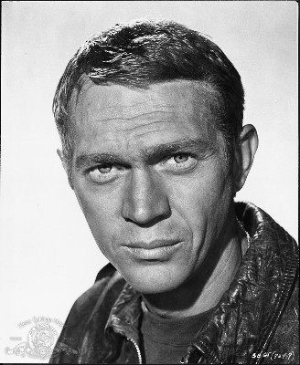
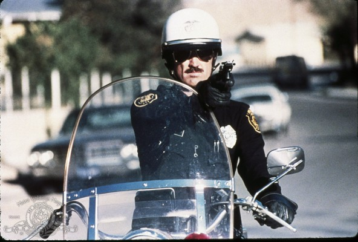
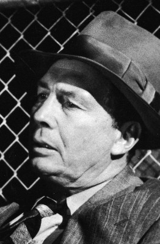
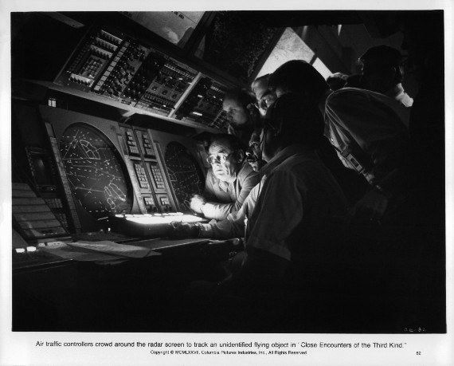
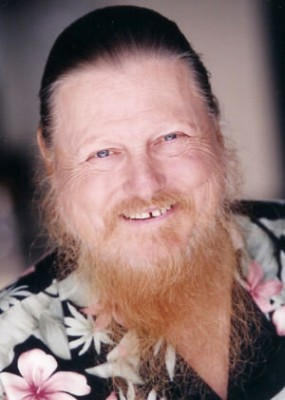
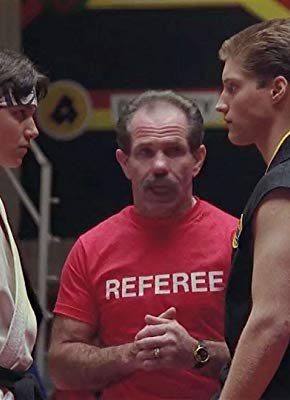
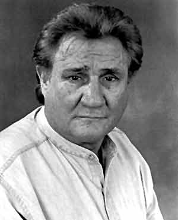
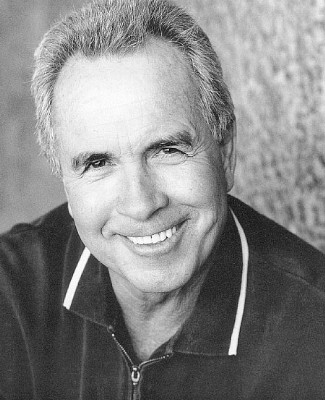

#11422 Ich, Tom Horn
Alternativ: Tom Horn (Englischer Titel)
 
 IMDB-Wertung: 6.9 / 10
IMDB-Wertung: 6.9 / 10  Tomatometer: 69
Tomatometer: 69  Metascore: 0
Metascore: 0 
Er wuchs in der gewalttätigen Zeit des Wilden Westens auf. Er hatte beim Eisenbahnbau gearbeitet, in den Minen nach Silber geschürft und durch die Gefangenname des berühmten Apachenhäuptlings Geronimo Schlagzeilen gemacht.\r Um die Jahrhundertwende tauchte er plötzlich in Wyoming auf, unerbittlich auf der Jagd nach Viehdieben. Aber die Zeiten hatten sich geändert. Für die Männer, die einst auf seine Hilfe bauten, war er zu einem unbeliebten Vorbild geworden. So versuchten sie, seinen Ruf zu zerstören, ihn vor aller Welt niederzumachen. Er wurde zum gnadenlosen Einzelkämpfer.
Jahr: 1980
Dauer: 93 Minuten
FSK: 12
Land: USA Studio: Warner Bros.Tonspuren: DD5.1 - ,
Untertitel:
Auflösung: 1080p (1920x800) Größe: 4259 MB
Genre: Drama, Krimi, Western, Liebe
Regisseur: William Wiard
Drehbuch: Thomas McGuane, Bud Shrake
Soundtrack: Ernest Gold
Darsteller:
-  Steve McQueen als Tom Horn
- Linda Evans als Glendolene Kimmel
 Richard Farnsworth als John C. Coble
Richard Farnsworth als John C. Coble-  Billy Green Bush als U.S. Marshal Joe Belle
 Slim Pickens als Sheriff Sam Creedmore
Slim Pickens als Sheriff Sam Creedmore Elisha Cook Jr. als Stablehand
Elisha Cook Jr. als Stablehand-  Roy Jenson als Lee Mendenhour
 Geoffrey Lewis als Walter Stoll
Geoffrey Lewis als Walter Stoll Harry Northup als Thomas Burke
Harry Northup als Thomas Burke- Steve Oliver als 'Gentleman' Jim Corbett
-  Bill Thurman als Ora Haley
- Bobby Bass als Corbett's Bodyguard
-  Mickey Jones als Brown's Hole Rustler
- Mel Novak als Corbett's Bodyguard
- Richard Kennedy als John Cleveland
-  Pat E. Johnson als Ora Haley's Bodyguard
-  Bill Hart als Slaughterhouse Man
- Clarke Coleman als Jimmy Nolt
 Chuck Hayward als Deputy Earl Proctor
Chuck Hayward als Deputy Earl Proctor Gilbert B. Combs als Horn's Captor
Gilbert B. Combs als Horn's Captor Walter Scott als Horn's Captor
Walter Scott als Horn's Captor-  Jeff Ramsey als Man in Horse Breaking Sequence
- Gary Combs als Man in Horse Breaking Sequence
- Bruce Andre als Townsman (uncredited)
- Sonny Skyhawk als (uncredited)
- Peter Canon als Assistant Prosecutor
- James Kline als Arlo Chance
- Bert Williams als Judge
- B.J. Ward als Cattle Baron
- Richard Brewer als Corbett's Bodyguard
- Tom Tarpey als Corbett's Bodyguard
- Bob West als Corbett's Bodyguard
- Larry Strawbridge als Ian MacGregor
- Jim 'Two Dogs' Burgdorf als Dart
- Jerry Wills als Rash
- Walter Wyatt als Isam
- Bob Orrison als Matt
- Fargo Graham als Auctioneer
- Leo Hohler als Auction Deputy
- Erik Owens als Boy at Auction
- Tom Ferguson als Brown's Hole Rustler
- Jos Massangale als Brown's Hole Rustler
- Dave Moordigian als Brown's Hole Rustler
- Michael E. Perry als Brown's Hole Rustler
- Jim Burk als Slaughterhouse Man
- Dan Corry als Windmill Man
- Jeffrey Meyer als Gunfighter
- Mike Chambers als Man in Feed Store
- Bob Kern als Man in Feed Store
- W.H. Manooch als Man in Feed Store
Datei: X:\HD-Western-1980-1999\Ich, Tom Horn (1980, FSK12, 1920x800).mkv seit 03.07.2019
Festplatte: HD Eastern+Western
 Es gibt insgesamt 29 Filme in der Gruppe 'HD-Western-1980-1999'
Es gibt insgesamt 29 Filme in der Gruppe 'HD-Western-1980-1999'